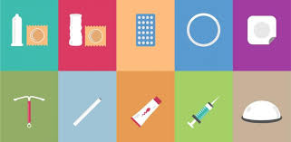
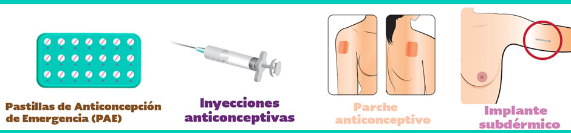
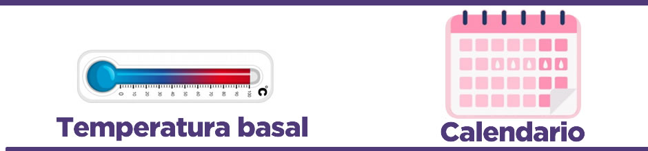
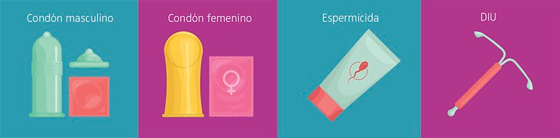

¿Qué es la educación sexual?
La educación sexual hace referencia al conjunto de actividades relacionadas con la enseñanza, difusión y divulgación acerca de la sexualidad en todas las edades del desarrollo, el aparato reproductor femenino y masculino, la orientación sexual, las relaciones sexuales, la planificación familiar, el empleo correcto de los métodos anticonceptivos, el sexo seguro, la reproducción, los derechos sexuales y reproductivos, los estudios de género y otros aspectos de la sexualidad, con el objetivo de alcanzar un estado específico de salud sexual y reproductiva.
Beneficios de la Educación Sexual
Métodos anticonceptivos
¿Qué son los métodos anticonceptivos?
Los métodos anticonceptivos, son sustancias, objetos o procedimientos que evitan que la mujer o persona gestante quede embarazada. Permiten tener el control de la natalidad, ayudando a las parejas a decidir si desean o no tener hijos hasta el momento en que estén preparadas para ello.
Tipos de métodos anticonceptivos
Existen diferentes tipos de maderas para protegerse de un embarazo no deseado, por ejemplo; se dividen en 4 tipos:
- Hormonales
- Naturales
- de Barrera
- Definitivos
Llamamos métodos anticonceptivos hormonales a todos aquellos que se basan en el uso de las hormonas sexuales femeninas, incluyendo la progesterona y el estrógeno, para manipular el ciclo menstrual. Son altamente eficaces en prevenir el embarazo, pero no tienen ninguna acción en la protección contra las enfermedades de transmisión sexual.

Los métodos naturales se definen como las técnicas de evitar embarazo
a través de la observación de los síntomas y signos que se producen de
forma natural en las fases fértil y estéril del ciclo menstrual.
Hay varios métodos naturales:

Los métodos anticonceptivos de barrera son objetos o medicamentos que bloquean el esperma y ayudan a prevenir un embarazo. Algunos métodos de barrera también pueden ayudar a prevenir la propagación de infecciones de transmisión sexual (ITS)
- El condón o preservativo para varones: es el método de barrera más común. Los preservativos están hechos de látex, poliueretano o de piel de cordero. Estos pueden estar cubiertos con silicona, gel a base de agua o espermicida. Los preservativos se ajustan sobre el pene e impiden que el semen entre a la vagina. Los preservativos masculinos pueden ayudar a reducir el contagio de las ITS.
- Un condón femenino: es un dispositivo delgado que se inserta dentro de la vagina hasta 8 horas antes de tener una relación sexual. No se debe usar con un preservativo masculino. Los preservativos femeninos ayudan a prevenir el contagio de las ITS.
- Un diafragma: es una cúpula de látex suave que cubre el cuello uterino y sirve para evitar que el esperma llegue ahí. Usted necesitará acudir con su médico para que le tome las medidas para el diafragma. Se deja en su lugar durante el coito y hasta 6 horas después. Usted puede tener relaciones sexuales más de una vez con el diafragma en su lugar. El diafragma se debe r etirar en un lapso de 24 horas después de haber tenido relaciones sexuales. El diafragma ayuda a reducir el contagio de las ITS.

Los métodos definitivos son procedimientos quirúrgicos que no impiden a la mujer o al hombre continuar con su actividad sexual. Para la mujer se realiza la oclusión tubaria bilateral (OTB) o ligadura de las trompas y para el hombre la vasectomía sin bisturí.
- Ligadura de trompas: La ligadura de trompas es una cirugía mínimamente invasiva, ambulatoria y de fácil recuperación que dura alrededor de 10 minutos y consiste en cauterizar las trompas de falopio para impedir el paso del óvulo al útero evitando así el embarazo.
- Vasectomía: Es un método anticonceptivo para los hombres que no desean tener hijos y para aquellos que ya son padres y no desean tener más. El procedimiento consiste en cortar y/o ligar los conductos deferentes por donde pasan los espermatozoides desde los testículos para salir en la eyaculación. Aunque es un método definitivo, se puede llegar a revertir a través de una cirugía llamada vasovasostomía.
Enfermedades de transmisión sexual
Las enfermedades de transmisión sexual(ETS) son infecciones que se contagian de una persona a otra usualmente mediante relaciones sexuales. Son muy comunes y muchas personas con ETS no tienen síntomas. Por eso, es importante hacerte exámenes sin importar si tienes síntomas de las ETS o no. Sin tratamiento, las enfermedades de transmisión sexual pueden causar serios problemas de salud.
Algunas enfermedades son:
Entre otros.